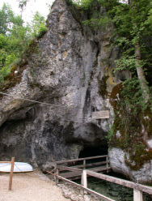

| In English |
| In English |
Friedrichshöhle
Wimsener Höhle
Touristische Informationen:
|  |
| Bild: Das Höhlenportal. |
{kind=link}
| Ort: | Von Ulm B311 44km bis nach Obermarchtal, rechts ab nach Zwiefalten. Von Reutlingen/Tübingen B312 bis Zwiefalten. An der Straße von Zwiefalten nach Hayingen, 3km N von Zwiefalten. (73,Kc59) |
| Öffnungszeiten: |
April bis Oktober täglich 10-18. November bis März nach Vereinbarung. [2014] |
| Eintrittspreise: |
Erwachsene EUR 4, Kinder (6-13) EUR 3,50, Kinder (2-5) EUR 3, Kinder (0-1) nicht erlaubt. Gruppen (20+): Erwachsene EUR 3. [2014] |
| Typ: |
 Karsthöhle,
Ganghöhle, Aktive Wasserhöhle, Malm Karsthöhle,
Ganghöhle, Aktive Wasserhöhle, Malm
|
| Licht: | elektrisch |
| Dimension: | L=723m, VR=60m, Vermessen: 263m. Wasserschüttung: Mittel=600 l/s |
| Führungen: | L=70m, D=10min, V=35.000/a [2005]. Besichtigung per Kahn. |
| Fotografieren: | Erlaubt |
| Zugänglichkeit: | Kahn nicht rollstuhlgerecht |
| Literatur: | Kleiner Führer durch die Friedrichshöhle Wimsen |
| Adresse: |
Naturerlebnis Wimsener Höhle, Wimsen 1, 72534 Hayingen-Wimsen, Tel: +49-7373-915260, Fax: +49-7373-915378.
E-mail: |
| Nach unserem Wissen sind die Angaben für das in eckigen Klammern angegebene Jahr korrekt. Allerdings können sich Öffnungszeiten und Preise schnell ändern, ohne daß wir benachrichtigt werden. Bitte prüfen Sie bei Bedarf die aktuellen Werte beim Betreiber, zum Beispiel auf der offiziellen Website in der Linkliste. |
|
Geschichte
 |
| Bild: Blick von innen zum Höhleneingang. |
| 1447 | erste urkundliche Erwähnung. |
| 09-AUG-1803 | Besuch des Kurfürsten Friedrich I. von Württemberg. |
| 1910 | erste Vermessung der Höhle durch den Topograph Haug. |
| 1953 | erste Erforschung durch Taucher der Gruppe Eschenbach - Göppingen. |
| 1959 | Durchtauchen des Siphons bei 90m durch Gerhard Wellhöfer und Entdeckung von weiteren 200m. |
| 1964 | Vermessung des neuen Teils durch Alexander Wunsch und Jochen Hasenmayer. |
| bis 1975 | Ertauchung weiterer 400m durch Jochen Hasenmayer. |
| ab 1995 | Neuvermessung der vorderen Teile durch die Höhlenforschungsgruppen HFGK und INGO (jetzt HFGOK). |
Bemerkungen
 |
| Bild: Stich von August Seyffer (9.8.1774-14.8.1845). |
Die Wimsener Höhle ist die Quelle der Zwiefalter Ach. Sie befindet sich im Glastal, die Glas fliest nur 50m vom Höhleneingang in die Ach. Sie ist die einzige mit dem Boot befahrbare Schauhöhle Deutschlands. Nur rund 70 m der Höhle werden bei der Führung mit einem Holzkahn für max. 12 Personen befahren. Dann taucht die Höhlendecke unter die Wasseroberfläche ab, und der Rest der Höhle ist nur mit Taucherausrüstung befahrbar. Da die Höhle eng ist, und Lehmsedimente am Boden schnell die Sicht mindern, ist das sehr gefährlich und wird nur sehr selten gemacht.
 |
| Bild: das Gedicht über dem Höhleneingang. |
Ihren Namen erhielt die Höhle zu Ehren von Kurfürst Friedrich I. von Württemberg, der die Höhle im Jahr 1803 besucht hat. Daran erinnert auch ein lateinisches Distichon über dem Höhleneingang:
Laetior unda tibi nunc Friderice fluit.
Dankbar begrüßt den hohen Besuch die hier waltende Nymphe.
Fröhlicher fließet dir nun, Friedrich, die rauschende Ach.
Die Friedrichshöhle ist frei zugänglich und im Eingangsbereich auch recht groß. Eine Befahrung mit dem Kahn ist leicht möglich. Das ist natürlich eine Folge der Stauung des Höhlenbachs für die Mühle, was aber wohl bereits vor Jahrhunderten geschehen ist. So wurde die Höhle bereits seit Jahrhunderten mit Holzkähnen befahren. Natürliches Ende jeden Besuchs ist der Siphon nach etwa 70m.
Die Forschung in der Friedrichshöhle begann somit eigentlich erst Ende der 1950er Jahre, als die Betauchung des Siphons mit neuen Tauchgeräten möglich wurde. Unter anderen war auch Jochen Hasenmeyer dabei beteiligt. Nach dem ersten Siphon wurde ein weiteres 200m langes trockenes Stück entdeckt, dann folgt ein weiterer Siphon. Dieser war über Jahrzehnte hinweg das Ende des technisch Machbaren. Erst im Jahr 2006 konnte er erfolgreich durchtaucht werden und danach eine weitere trockene Fortsetzung entdeckt werden. Allerdings ist dies so schwierig und aufwändig, dass es wohl nicht in absehbarer Zeit zu weiteren Forschungstätigkeiten kommen wird.
Wimsen selbst ist eine ehemalige Mühle mit Gasthaus, die zum Schloß Ehrenfels gehört. Zu diesem Gasthaus gehört auch eine Forellenzucht direkt vor dem Höhleneingang im Quellwasser der Ach. Die Forellen findet man dann auf der Speisekarte der Gaststätte wieder. In der ehemaligen Mühle wird seit einigen Jahren ein Film über die Erforschung der Friedrichshöhle gezeigt.

|
| Wimsener Höhle Gallerie |
{kind=link}
{kind=link}
{kind=link}
{kind=link}
{kind=link}
{kind=link}
- Siehe auch
 Auf Google nach "Wimsener Höhle" suchen...
Auf Google nach "Wimsener Höhle" suchen... Google Earth Placemark
Google Earth Placemark Wimsener Höhle - Wikipedia
Wimsener Höhle - Wikipedia Tress Gastronomie | Eintrittspreise
(visited: 12-JUL-2014),
offizielle Website
Tress Gastronomie | Eintrittspreise
(visited: 12-JUL-2014),
offizielle Website- www.germancavediving.de - Wimsener Höhle
- Die Wimsener Höhle
- Friedrichshöhle Wimsen oder Wimsener Höhle
- Friedrichshöhle
(
 )
)